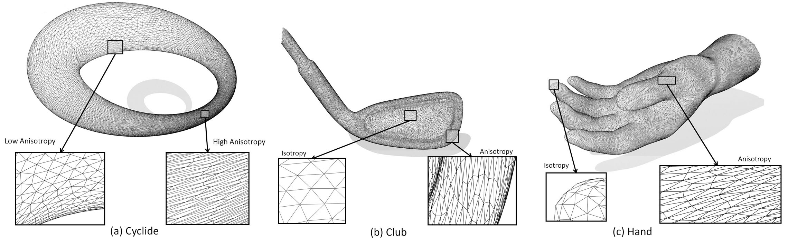

| |
Particle-Based Anisotropic Surface Meshing |
|
 |
|
| Project
Members |
| |
Zichun Zhong1, Xiaohu Guo1, Wenping Wang2
, Bruno Lévy3
, Feng Sun2
, Yang Liu4
, Weihua Mao5
1: University
of Texas at Dallas 2: The University of Hong Kong 3: INRIA Nancy - Grand Est
4: NVIDIA Corporation 5: UT Southwestern Medical Center at Dallas
|
|
| Abstract: |
| |
This paper introduces a particle-based approach for anisotropic surface meshing. Given an input polygonal mesh endowed with a Riemannian metric and a specified number of vertices, the method generates a metric-adapted mesh. The main idea consists of mapping
the anisotropic space into a higher dimensional isotropic one, called
"embedding space". The vertices of the mesh are generated by uniformly sampling the surface in this higher dimensional embedding
space, and the sampling is further regularized by optimizing an energy function with a quasi-Newton algorithm. All the computations
can be re-expressed in terms of the dot product in the embedding
space, and the Jacobian matrices of the mappings that connect different spaces. This transform makes it unnecessary to explicitly
represent the coordinates in the embedding space, and also provides
all necessary expressions of energy and forces for efficient computations. Through energy optimization, it naturally leads to the desired anisotropic particle distributions in the original space. The triangles are then generated by computing the Restricted Anisotropic
Voronoi Diagram and its dual Delaunay triangulation. We compare
our results qualitatively and quantitatively with the state-of-the-art
in anisotropic surface meshing on several examples, using the standard measurement criteria. |
| |
| Keywords:
Anisotropic Meshing, Particle, and Gaussian Kernel |
|
| |
| Video:
YouTube |
| |
| |
|
| Publication: |
| |
- Zichun Zhong, Xiaohu Guo, Wenping Wang, Bruno Lévy, Feng Sun, Yang Liu, Weihua Mao, "Particle-Based Anisotropic Surface Meshing", in ACM Transactions on Graphics (Proceedings of SIGGRAPH 2013), Vol. 32(4), Article No. 99, 2013.
[appendix][data]
|
| |
|